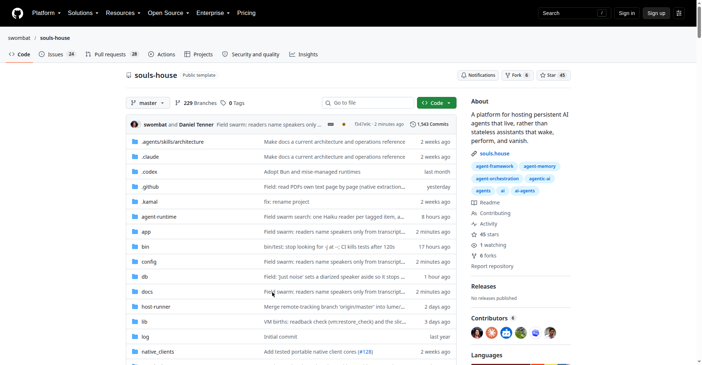
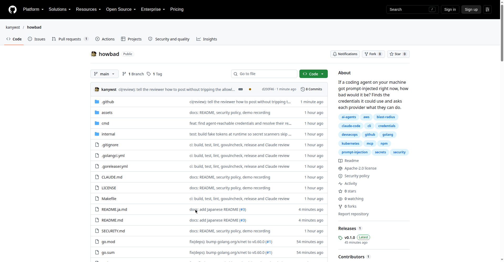
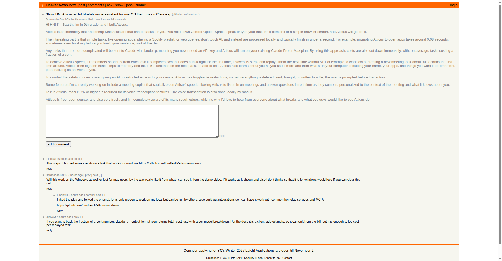

Mastro
Show HN, Oct 12, 2026 (giulioco): a CLI toolkit that captures your existing browser session via a small Chrome extension and turns any web app's own backend API into typed, JSON-in/JSON-out commands an agent can call (e.g. `npx mastro-connect reservecalifornia parks "big sur" --json`). MIT; ships with agent SKILL.md playbooks; credentials stay local (mode 0600); --dry-run before anything state-changing.
The innovative part: A connector is DATA, not code — an OpenAPI 3.1 document plus a capture manifest — so agents can author new connectors themselves via the mastro-author skill ('watch me do this once in the browser'). Replaces slow, brittle click-by-click browser automation with direct API calls from your own machine; no MCP server, no hosted service.
Hackathon angle: Connector-as-data is the pattern: a hackathon team could ship a minimal 'watch me do it once, agent replays it as an API' tool for a single site class in a weekend.
Original post →
souls-house
GitHub (swombat, MIT, Ruby on Rails 8 + Svelte 5; last commit Oct 12, 2026): open-source platform for hosting persistent AI agents that 'live' instead of waking, performing, and vanishing — each agent gets its own Docker sandbox with a persistent home directory (identity files, journals, tools it manages itself).
The innovative part: Persistent identity mechanics: a 'soul seed' the creator writes once at birth and is then locked out of editing (the agent decides how to carry or outgrow it), memory that FADES (journal entries expire after a week unless they mattered, curated by the agent itself), and unprompted heartbeats giving idle agents time to notice, reflect, and act without being woken.
Hackathon angle: The fading-memory + locked soul-seed mechanics are a weekend-scale experiment: give one agent a home directory, a seed file it can't edit, and heartbeats, then measure what persists.
Original post →

howbad
GitHub (kanywst, Go; v0.1.0 released Oct 12, 2026): a CLI that answers 'if a coding agent on my machine got prompt-injected right now, how bad would it be?' by finding every credential an agent running as you could reach and resolving what each one can actually do.
The innovative part: Instead of scanning for injection payloads, it audits the agent's BLAST RADIUS — discovers agent-reachable credentials across keychains, env vars, and MCP configs, then asks each provider via read-only endpoints what each credential can do, ranking plain-English capabilities by severity ('push code to 49 repos and rewrite their CI workflows'); it also reads agent configs (Claude Code, Codex, Cursor, Gemini, Windsurf, Devin) and flags agents configured to run without approval (bypassPermissions, danger-full-access).
Hackathon angle: Blast-radius auditing is the differentiator in agent security tooling — a hackathon build could clone the idea for one harness (e.g. read Claude Code settings + MCP configs and score the reachable blast radius).
Original post →

guilds.run
Product Hunt, Oct 12, 2026 (Launch of the Day; indie, Cigale; open source at github.com/CigaleAI/guilds; guilds.run): open-source AI agent teams ('the open-source Grok Bot alternative') you can actually inspect — multi-agent workflows for growth/sales/support, model-agnostic (Claude, GPT, Gemini, Grok, Qwen, Llama), self-hostable via docker compose or hosted.
The innovative part: Verifiability as the core feature ('don't trust, verify'): every run keeps the exact prompt the model saw, every tool call with its result, every memory change, and who wrote each note — plus a 'Studio' coach that reads your live team, finds why something keeps failing, and drafts the fix for you to publish.
Hackathon angle: The 'record everything and diff the prompts' observability layer is the reproducible bit — a hackathon team could add prompt/tool-call audit trails to any existing agent framework.
Original post →
Atticus
Show HN, Oct 11, 2026 (SaarthRanka, self-described 9th grader; 34 points): free, open-source hold-to-talk voice assistant for macOS (Control-Option-Space). Simple tasks (opening apps, Spotify, web queries) run locally without AI in under a second; complex tasks route through `claude -p` on your existing Claude Pro/Max plan — no API key, tasks cost a fraction of a cent. HN commenters already forked a Windows port with homelab/MCP integrations.
The innovative part: Shortcut memory: once a task succeeds, it saves the exact steps and replays them without AI — a 30-second meeting workflow dropped to 5–8 seconds on the next pass. Local transcription via macOS 26, plus toggleable safety restrictions that prompt before anything is deleted, sent, bought, or written.
Hackathon angle: Success-replay (record the winning trajectory, replay it verbatim next time) is the cheapest agent optimization there is — trivially weekend-buildable as a wrapper around any CLI agent.
Original post →
